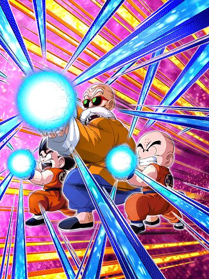
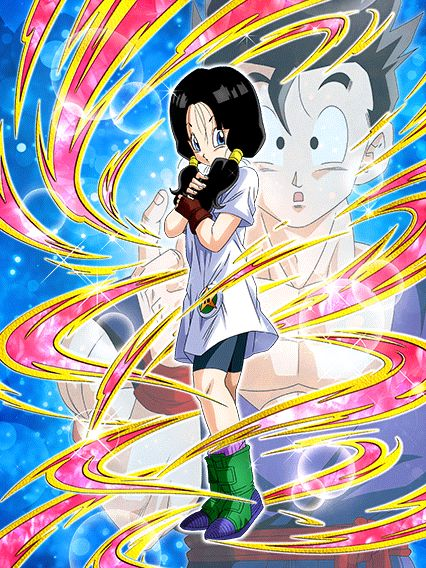
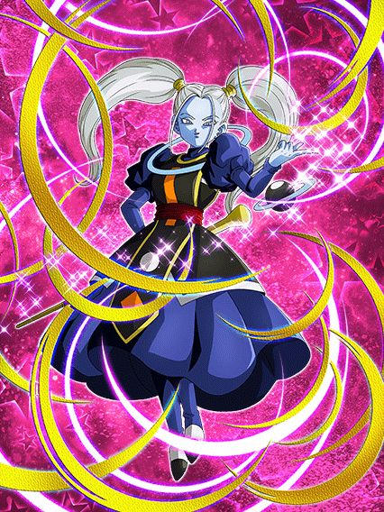
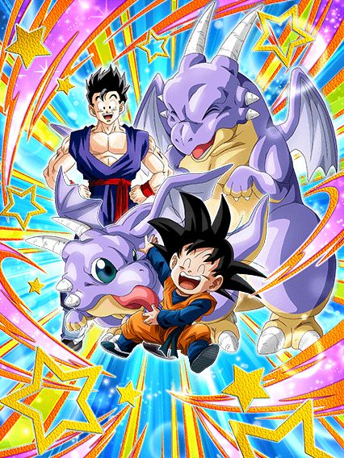

Celebração do Mestre Kame / Peppy Gals / Halloween
Mais um pedaço de conteúdo faltando
Pelo menos isso veio num momento onde não tem nada incrível acontecendo.. diferente de certos personagens que incluem Instinto Superior e TEQ..
^
Sumário (clique para ir a qualquer um dos tópicos)
- Mestre Kame Dokkan Fest
- Bulma Coelhinha
- Cocotte INT
- Mai TEQ
- EZA da Videl STR
- EZA da Macarita AGL
- EZA da Kyawei TEQ
- Goten e Icarus Jr. F2P
- EZA do Oolong e Launch F2P
Mestre Kame Dokkan Fest

O líder pra Peppy Gals que não é uma Peppy Gal.
O Mestre Kame é bem focado em suporte, dando 50% de ATK e DEF pra Turtle School e Peppy Gals, e ainda aumentando o suporte pra 80% no turno da Active dele
O grande problema dele é ele ser meio restrito, precisando de 2 aliados Turtle School no time pra lançar um Super adicional e ter mais redução de dano
Redução essa de 30% que dura por 7 turnos, sendo aumentada pra 50% se a restrição de Turtle School for completada
Além de ele precisar de uma Bulma no turno pra ter mais dano e chance de crítico.. complicado
Bem restrito, mas útil.
Bulma Coelhinha
")
Então a Bulma com outra roupa tem um nome diferente, mas o Zamasu com metade do corpo se decompondo não tem? Então tá-
A Bulma é uma suporte desvia-ou-morre, tendo 50% de chance de desvio que fica em 60% antes de ela levar algum golpe, e builda +20% desviando 4 vezes
Além disso, ela muda orbs pra rainbow e dá 50% de ATK e DEF pra DB Saga, Earth-Bred Fighters e Peppy Gals
Uma suporte útil que ajuda o Mestre Kame, bom card.
Cocotte INT
Eu ainda não sei como se pronuncia o nome dela.
A Cocotte é não ironicamente um bom card, tendo um dano bem aceitável e defesa decente
Se tiver pelo menos 3 aliados Peppy Gals ou Universe 11 no time, ela tem 33% de redução de dano, lança um SA adicional e tem scouter
Só faltou o Jiren no Global né 💀
Mai TEQ
Ela desvia.
A Mai tem 50% de chance de desvio que aumenta pra 70% se tiver outra Peppy Gals ou DB saga no turno, além de 2 adicionais com 50% de chance de serem SAs
Além disso, se tiverem 3 ou mais DB Saga ou Peppy Gals no time, ela dá 60% de ATK e DEF pra todos aliados
Bom suporte e desvio competente, ótimo card.
EZA da Videl STR

Desvie-e-atire-uma-bomba-nuclear-no-boss-ou-morra.
O desvio da Videl nos slots 1 e 3 foram buffados pra 70%, o que é bom, mas a defesa dela antes de atacar continua complicada..
Ainda assim, depois de desviar ela dá crítico garantido e lança um adicional com 70% de chance de ser um SA se ela levar um golpe
Como ela já tem um SA adicional garantido, tem stats bem altos e stacka ATK no SA, o dano dela é completamente explosivo
EZA bem forte.
O EZA da Macarita AGL

Quase que ela continuaria sendo uma suporte pra absolutamente ninguém.
Considerando que ela esteja num time completo Universe 11, ela tem 70% de chance de desvio, muda orbs pra rainbow, dá 50% de ATK e DEF pra todo mundo e tem 30% de redução de dano
Ela ainda teria um suporte muito desbalanceado de dar 11% de redução de dano a todos os aliados, mas isso só acontece 1 vez por partida se ela estiver no slot 3 💀
O EZA da Kyawei TEQ

Pelo menos agora as chances de ela ser útil são boas.
O mais importante da Kyawei é que as chances de 30% de fazer um monte de coisa foram aumentadas e agora ela tem 50% de chance de desvio
A chance de desvio pode até aumentar pra 70% mas só contra oponentes Tournament Participants.. aí complica
Ela é um bom card pra SBR e Ultimate Clash por causa dos debuffs e selamento.
Goten e Icarus Jr. F2P

O melhor card de halloween de todos.
Esse card é baseado numa arte do Toyotarou do Gohan adulto e o Icarus crescido e isso é muito genial
Enfim, a única coisa legal desse cara é ele dar suporte de 35% de DEF por 2 turnos se tiver um aliado Bond of Friendship no turno
Tirando isso, o dano é baixo, defesa bem ruim.. melhor esperar um EZA.
EZA do Oolong e Launch F2P
Bom, obviamente eles perderem ATK e DEF a cada turno não é algo que possa ser removido com um EZA, mas agora eles buildam até 75% de chance de desvio com a passagem de turnos, que é bem útil
Tirando o desvio, eles buildam um pouco de ATK a cada SA feito, e buildam DEF a cada golpe desviado
Em geral, EZA aceitável e bem decente pra um card F2P que só funciona em 2 times.
Você chegou ao fim dessa página!
Obrigado por ler tudo, e fica a vontade pra ver outras